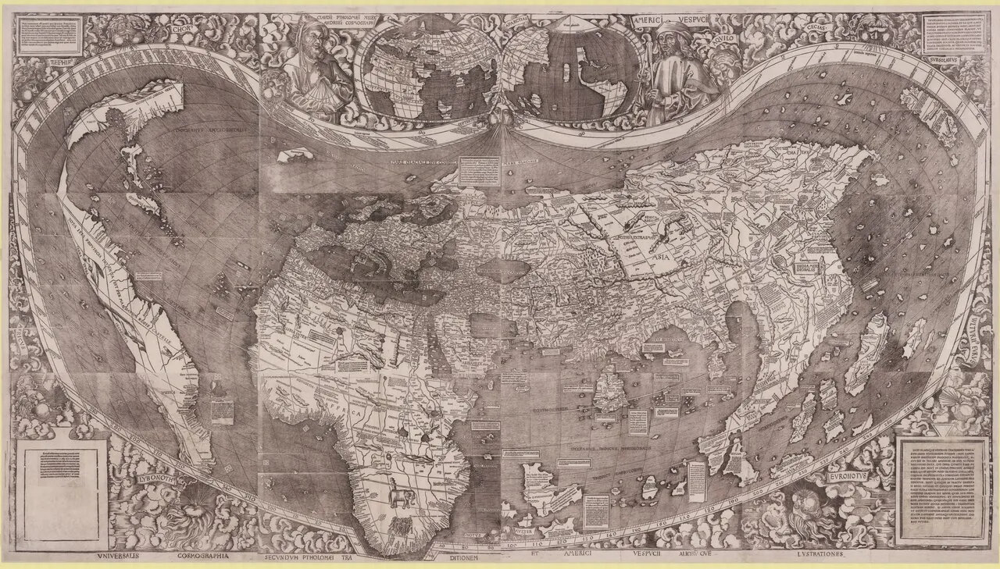

Kısa cevap: Erken Modern Dönem, Avrupa tarihi için çoğunlukla yaklaşık 1450–1800 arasına yerleştirilen bir dönemdir. Rönesans, Reform, matbaanın yayılması, bilimsel dönüşüm ve okyanus aşırı imparatorluklar bu yüzyılları biçimlendirdi. Fakat değişim Avrupa'da başlamış olsa da dünyanın geri kalanı bu tarihte “tarihe katılmadı”; farklı toplumlar zaten kendi kurumları, bilgileri ve ticaret ağlarıyla yaşıyordu.
Erken Modern Dönem hangi yılları kapsar?
Avrupa tarihi için kullanışlı yaklaşık aralık MS 1450–1800'dür. Başlangıç için 1453'te Konstantinopolis'in Osmanlılar tarafından alınması veya 1492'de Kristof Kolomb'un Karayipler'e ulaşması gibi tarihler seçilir. Dönemin sonu da çoğu anlatımda 1789 Fransız Devrimi ya da 18. yüzyılın sonundaki sanayileşme dönüşümleriyle ilişkilendirilir. Bunlar kesin duvarlar değil, uzun değişimleri konuşmayı kolaylaştıran işaretlerdir.[1]
1492'yi “Amerika'nın keşfi” diye adlandırmak doğru değildir. Karayipler ve Amerika kıtaları, Avrupalı seferlerden çok önce yerli toplumların yurduydu. Atlantik seferleri Avrupa, Afrika ve Amerika arasındaki temasları yoğunlaştırdı; ticaret ve göç kadar fetih, toprak gasbı, hastalık ve zorla çalıştırma da bu sürecin parçası oldu.[3]
Rönesans, hümanizm ve matbaanın etkisi
Rönesans, kabaca 14. yüzyıldan itibaren İtalya'da belirginleşip Avrupa'nın farklı bölgelerine farklı hızlarda yayılan kültürel ve entelektüel dönüşümlere verilen addır. Antik Yunan ve Roma metinlerinin yeniden okunması önemliydi; ancak Rönesans yalnızca “unutulmuş bilginin bir anda geri gelişi” değildi. Sanatçılar, zanaatkârlar, tüccarlar, saraylar ve kent yönetimleri yeni üretim biçimlerini destekledi; İslam dünyası ve Bizans üzerinden aktarılan metinler de bu bilgi dünyasının parçasıydı.[1]
Johannes Gutenberg'in 15. yüzyıl ortalarında Mainz'da geliştirdiği metal harfli baskı düzeni, Avrupa'da kitapların çoğaltılmasını hızlandırdı. Bu, baskının dünyadaki ilk ortaya çıkışı değildi: Çin'de tahta baskı yüzyıllar önce kullanılıyor, hareketli harf denemeleri de yapılıyordu. Avrupa'da matbaanın yaygınlaşması metinlerin dolaşımını artırdı; fakat herkes bir anda okuryazar olmadı. Kâğıt ve kitap maliyeti, eğitim, dil ve toplumsal konum erişimi belirlemeye devam etti.
Reform: inanç değişirken siyaset de değişti
1517, Martin Luther'in Katolik Kilisesi'ne yönelttiği eleştirilerle başlayan Reform hareketlerini anlatmak için sıkça kullanılan sembolik bir yıldır. Süreç tek kişinin başlattığı, bütün Avrupa'nın aynı anda değiştiği bir olay değildi. Farklı bölgelerde Protestan kiliseleri ortaya çıktı; Katolik dünyasında da kurumsal ve düşünsel yenilenme hareketleri gelişti. Hükümdarlar, kentler, din insanları ve sıradan topluluklar bu çatışma ve uzlaşmalarda farklı taraflar tuttu.
Dinî ayrışmalar savaşlara, göçlere ve yeni yönetim biçimlerine yol açtı; aynı zamanda okuryazarlık, ibadet dili ve metinlerin çoğaltılması üzerine tartışmaları büyüttü. Reformu yalnızca “dinin özgürleşmesi” ya da yalnızca “savaşlar” diye anlatmak eksik kalır: insanların inancı, siyasi iktidar ve gündelik yaşam iç içe değişti.
Bilimsel dönüşüm: eski otoriteden yeni gözleme
16. ve 17. yüzyıllarda gökbilim, anatomi, fizik ve matematik alanlarında yeni ölçüm araçları ve açıklamalar geliştirildi. Kopernik'in 1543 tarihli eseri Dünya'nın Güneş çevresinde hareket ettiğini savunan modeli ortaya koydu; Galileo'nun teleskop gözlemleri ve Newton'un 1687'de yayımladığı mekanik ilkeler daha sonraki tartışmaları etkiledi. Bu gelişmeler, bilimsel bilginin bir anda ve yalnızca Avrupa'da doğduğu anlamına gelmez. Araştırma, önceki kuşakların birikimi, farklı kültürlerden aktarılan matematik ve astronomi bilgisi, gözlem araçları ve uzun tartışmalarla ilerledi.[4]
“Bilimsel Devrim” sözü bu dönüşümlerin önemini anlatır, ama her tarihçi aynı başlangıç ve bitişi kabul etmez. Yeni yöntemler de eski düşünce biçimlerini bir günde silmedi. Üniversiteler, saray çevreleri, zanaat atölyeleri ve yeni bilim toplulukları arasında bilgi dolaşırken, kimin araştırma yapabildiği ve hangi bilginin kabul gördüğü toplumsal güç ilişkilerinden etkileniyordu.
Okyanus aşırı seferler: bağlantı kadar şiddet de
Portekiz ve İspanya'nın deniz seferleri 15. yüzyılın sonlarından itibaren Afrika kıyıları, Hint Okyanusu ve Amerika kıtaları arasındaki bağlantıları genişletti. Avrupa için yeni rotalar açılırken, bu denizler ve bölgeler yerel halklar ve tüccarlar tarafından zaten biliniyordu. Seferler yalnızca cesur denizcilerin hikâyesi değildi; kraliyet finansmanı, haritacılık, gemicilik, ticari rekabet ve askeri güç birlikte rol oynadı. Macellan'ın seferini bu bağlamda ayrıntılı yazımızda okuyabilirsiniz.
Bu bağlantılar eşit koşullarda kurulmadı. Avrupa imparatorluklarının Amerika'daki fetihleri yerli toplumların topraklarını ve siyasi yapılarını hedef aldı; hastalıklar ve zorla çalıştırma ağır nüfus kayıplarına yol açtı. Atlantik köle ticaretiyle çok sayıda Afrikalı zorla yerinden edilerek köleleştirildi. Şeker, gümüş ve başka malların üretimi küresel ekonomiyi büyüttü; bedeli çoğu zaman sömürgeleştirilen ve köleleştirilen topluluklara yüklendi. Library of Congress'in 1492 sergisi, temasın farklı topluluklar üzerindeki sonuçlarını ve Amerika'daki toplumların Avrupalılardan önceki varlığını birlikte ele alır.[3]
Bu yüzyılların dünyası Avrupa'yla sınırlı değildi. Osmanlı, Safevi ve Babür imparatorlukları; Ming ve Qing Çin'i; Batı Afrika'daki devletler ve Amerika'daki yerli siyasi topluluklar kendi güç, bilgi ve ticaret ağlarını kuruyordu. Bazı ağlar karşılaştı, bazıları rekabet etti; fikirler, ürünler ve insanlar farklı yönlerde hareket etti. Tarihçi Sanjay Subrahmanyam'ın “bağlantılı tarihler” yaklaşımı, bu ilişkileri tek bir kıtanın ilerleme çizgisine indirgemeden incelemeye çağırır.[2]
Gündelik hayat ve ekonomik dönüşüm
Kentlerde basım atölyeleri, limanlar, pazarlar ve zanaat üretimi büyürken, kırsal yaşam tarıma ve yerel güç ilişkilerine bağlı kalmayı sürdürdü. Uzak mesafe ticareti daha fazla malı dolaşıma soktu; fakat bu zenginliğin nasıl paylaşıldığı eşit değildi. Kadınların, köylülerin, kentli emekçilerin, tüccarların ve imparatorluk yöneticilerinin dönemi deneyimleme biçimleri birbirinden ayrılıyordu. “Modernleşme”yi herkesin refahının aynı anda arttığı düz bir ilerleme gibi anlatmamak gerekir.
18. yüzyılın sonlarına doğru Britanya'da kömür, buhar gücü, makineleşme ve fabrika üretimi yeni bir sanayileşme sürecini başlattı. Bu değişim Erken Modern Dönem'in bittiği gün başlamadı; eski üretim ve ticaret biçimleriyle bir süre yan yana ilerledi. Sonraki durak olan Sanayi Devrimi, bu uzun dönüşümün ayrı bir aşamasıdır. Ayrıntılar için Sanayi Çağı rehberimize geçebilirsiniz.
Orta Çağ'dan Sanayi Devrimi'ne geçiş
Bu dönemi tek bir icadın ya da “Avrupa'nın dünyayı keşfetmesinin” öyküsü olarak değil; fikirlerin, malların ve iktidarın yeniden düzenlendiği, aynı zamanda sömürgecilik ve kölelik gibi büyük adaletsizliklerin derinleştiği bir süreç olarak okumak daha doğru. Orta Çağ'ın ardından gelen yüzyıllar, Sanayi Devrimi'ne giden yolu hazırladı; ama bu yol tüm toplumlar için aynı fırsatları ve sonuçları üretmedi.
İleri okuma
- Orta Çağ: Toprak, Bilgi ve Sofra
- Macellan'ın seferi: keşif, iktidar ve karşılaşma
- Osmanlı Beyliği nasıl kuruldu?
- Selçuklulardan Osmanlılara Anadolu
- Teknolojik Keşifler Haritası
- Siyasi tarihe genel bakış
Kaynaklar ve görsel bilgisi
- Merry E. Wiesner-Hanks, Early Modern Europe, 1450–1789, 2. bs., Cambridge University Press, 2013. Yayınevi DOI kaydı.
- Sanjay Subrahmanyam, “Connected Histories: Notes towards a Reconfiguration of Early Modern Eurasia,” Modern Asian Studies, 31/3 (1997), s. 735–762. Hakemli makale DOI kaydı.
- Library of Congress, 1492: An Ongoing Voyage. Dijital sergi; “Europe Claims America” bölümü.
- H. Floris Cohen, The Scientific Revolution: A Historiographical Inquiry, University of Chicago Press, 1994. Bilimsel Devrim teriminin tarih yazımındaki kapsamı üzerine akademik çalışma.
- Martin Waldseemüller, Universalis cosmographia (1507), National Library of Australia nüshasının dijital görüntüsü. Wikimedia Commons dosya kaydında eser kamu malı olarak sınıflandırılmıştır: görsel ve lisans bilgisi; National Library of Australia katalog kaydı.
Erken Modern Dönem'in tarih sınırları Avrupa tarih yazımındaki yaklaşık işaretlerdir; başka toplumların dönemlendirmesi farklıdır. Waldseemüller haritası gerçek bir 1507 tarihli belgenin dijital kopyasıdır; çağdaş bir dünya haritası değildir.